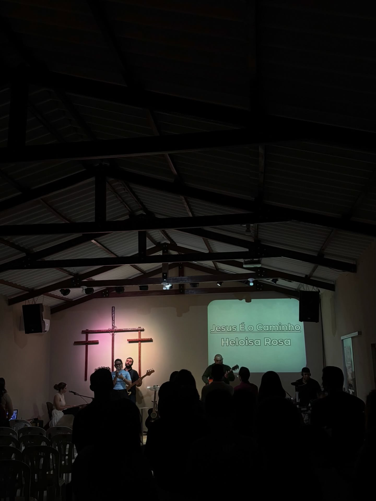
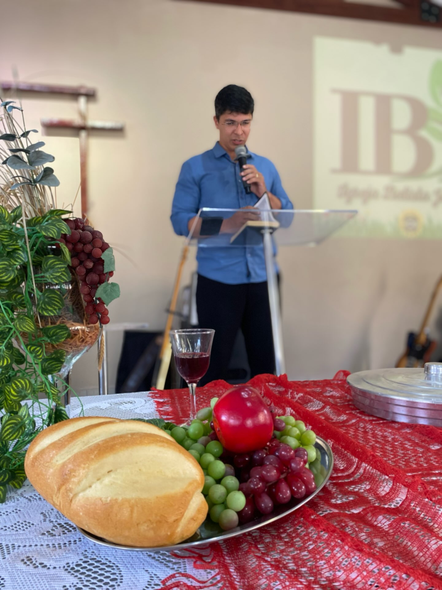

A Igreja Batista Jardins é uma comunidade de fé que vive e serve no bairro Jardins, em São Gonçalo do Amarante/RN. Somos uma família que se reúne para adorar a Deus, estudar Sua Palavra e cuidar uns dos outros — de portas abertas para quem quiser conhecer o amor de Jesus Cristo.
"Uma família a serviço do Reino"
Pastor: Pr. Walmir Fernandes @fernandes.ferreira34


9h
18h
19h30
Envie seu pedido de oração e nossa equipe pastoral irá orar com você.
Rua Sebastião Piau, 90, Cidade Rosas II
São Gonçalo do Amarante/RN
Domingo 9h e 18h · Quarta 19h30
Traçar rota no Google Maps